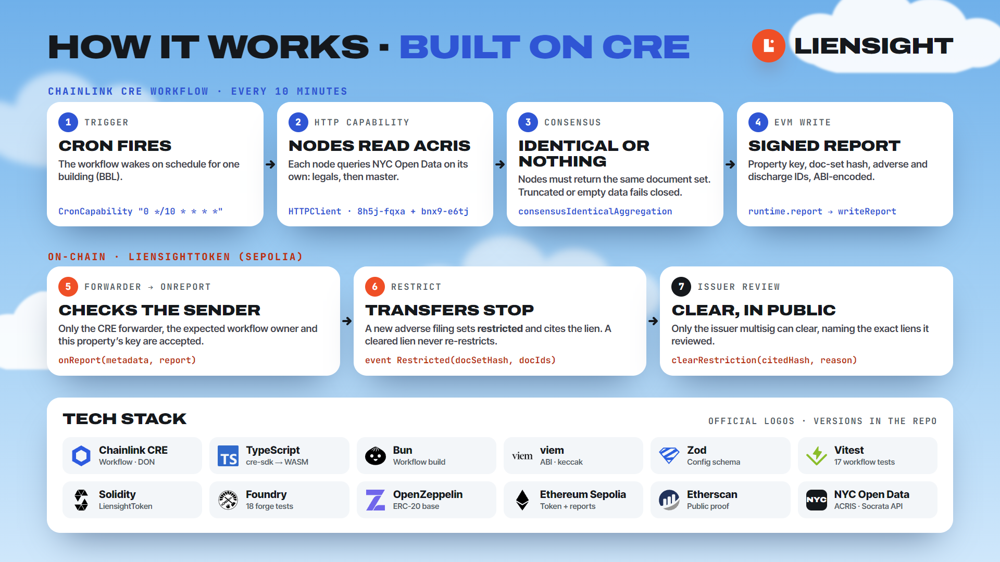

Liensight docs.
Liensight restricts a real-estate token’s transfers when a lien is recorded against the building. A Chainlink CRE workflow reads New York City’s public land records (ACRIS), the nodes agree on what they say, and a signed report tells the token on-chain. This page covers how to run it, how it works, and where it stops.
Quickstart
From a fresh clone to passing tests and a live workflow simulation against real NYC records in about ten minutes. You don’t need a wallet or any keys for this.
Prerequisites
| Tool | Version used | Get it |
|---|---|---|
Foundry (forge, cast) | 1.5.1 | getfoundry.sh, then foundryup |
| Node.js and npm | 20 or newer | nodejs.org |
Chainlink CRE CLI (cre) | v1.2.0 | docs.chain.link/cre |
| Git | any | git-scm.com |
- Clone, with submodules
The contracts pull OpenZeppelin (and
forge-stdthrough it) as git submodules.git clone --recursive https://github.com/shane2512/LienSight.git liensight cd liensight
- Install the workflow’s packages
This also installs Bun locally, which the CRE CLI uses to build the TypeScript workflow.
cd workflow && npm i && cd ..
- Run all 35 tests
cd contracts && forge test && cd .. # 18 passed cd workflow && npm test && cd .. # 17 passed (3 files)
- Simulate the workflow against live ACRIS
Log in once, put the local Bun on your
PATH, and simulate both configured properties.cre login export PATH="$PWD/workflow/node_modules/.bin:$PATH" # Bronx 2-5789-1022: has a recorded lien of common charges cre workflow simulate ./workflow -T staging-settings --non-interactive --trigger-index 0 # Manhattan 1-905-1347: nothing adverse cre workflow simulate ./workflow -T clean-settings --non-interactive --trigger-index 0
Expect
ACRIS docs=14 adverse=2026092900833001:LOCCfor the Bronx lot andACRIS docs=12 adverse=nonefor Manhattan. Counts can grow as the city records new filings.iWithout
--broadcastthe write is a dry run and logs a zero transaction hash. That’s expected. On Windows PowerShell, set the path with$env:Path = "$PWD\workflow\node_modules\.bin;$env:Path". - Read the result on-chain
The same workflow, run with
--broadcast, already restricted the demo token.cast call 0xf813c584Fe5e8c86A3F6c7265923CeE0850604aE "restricted()(bool)" \ --rpc-url https://ethereum-sepolia-rpc.publicnode.com # true
Verify the live deployment
Every claim about the Sepolia token can be checked independently. Steps 1–3 need nothing but a browser.
- See the lien in the public record
Open Check a lot and click Bronx 2-5789-1022 · has a lien. The page reads ACRIS live and shows one adverse filing:
LOCC 2026092900833001, recorded 2026-09-30. - See the report on-chain
Open the token’s events on Etherscan. The
report(...)call carries the document-set hash the nodes agreed on (0xde6f…3948). - See the restriction
Open Proof, which reads
restricted()from Sepolia in your browser. - Ask the chain directly (needs Foundry)
RPC=https://ethereum-sepolia-rpc.publicnode.com TOKEN=0xf813c584Fe5e8c86A3F6c7265923CeE0850604aE cast call $TOKEN "restricted()(bool)" --rpc-url $RPC # true cast call $TOKEN "citedHash()(bytes32)" --rpc-url $RPC # 0xb87dc80e…49f4 cast call $TOKEN "reportReceiver()(address)" --rpc-url $RPC # 0x15fC6ae9…9F88 (CRE forwarder) # even the issuer can't move shares: reverts with TransferRestricted() (0xe827105e) cast call $TOKEN "transfer(address,uint256)(bool)" 0x000000000000000000000000000000000000dEaD 1 \ --from 0xd51E7130B55f10595939f274cCB8c00b52C915b4 --rpc-url $RPC
citedHashequalskeccak256(abi.encode([bytes32(2026092900833001)])), so the restriction provably cites that ACRIS document.
Deployment record
| Item | Value |
|---|---|
| Token | 0xf813c584Fe5e8c86A3F6c7265923CeE0850604aE |
| Deploy tx | 0xb27c9ed1…69c4d9 |
| First restricting report | 0xc0cc2382…bda85ab |
| Report in the demo video | 0x5e301044…160d94 |
| Forwarder | 0x15fC6ae953E024d975e77382eEeC56A9101f9F88 (CRE simulator) |
| Expected workflow owner | 0xaAaA…aAaA (the simulator’s public placeholder) |
| Property key | keccak256("BBL:2-5789-1022") |
| Code-map hash | 0xf85b55218f5961096bde039896bb3b115179f44c76446ff88e22e3b94326faf3 |
Using the website
The site is static and needs no wallet. Nothing on it writes to the chain.
Pick a borough, enter block and lot, press Check. The page applies the same adverse map as the workflow, in your browser.
ProofThe token’s live stateReads the deployed token from Sepolia, with links to every transaction.
SecurityThreats and checksWhat the token refuses, and why.
RoadmapWhat comes nextFrom the simulator to a deployed workflow.
To find a property’s borough-block-lot (BBL), search its address on ACRIS. To run the site locally:
python -m http.server 5181 --directory site
# open http://localhost:5181Architecture
Three parts: a public data source, a Chainlink CRE workflow, and a token contract. The workflow carries facts from the first to the third, and nothing else can set the token’s restriction.

| Component | Role |
|---|---|
| ACRIS on NYC Open Data | The city’s land records. Legals (8h5j-fqxa) maps a lot to document IDs; Master (bnx9-e6tj) gives each document’s type. |
| CRE workflow | Runs on every node of a Chainlink DON on a schedule. Fetches, agrees, signs and writes. |
| Chainlink forwarder | Verifies the DON’s signatures and calls the receiver contract with the report and metadata. |
LiensightToken | ERC-20 SPV share token. Restricts transfers on a new adverse filing; only the issuer can clear. |
| Issuer multisig | Holds the supply, reviews restrictions, and clears them publicly. |
| Website | Explains, checks lots and reads state. Not part of the trust path. |
Design decisions
| Decision | Why |
|---|---|
| A DON for one public API | No single server or operator decides what the chain sees, and the restriction cites a document anyone can look up. |
| Identical consensus, not median | The output is a set of documents, not a number. Byte-identical canonical JSON makes agreement exact. |
| Fail closed | A truncated or empty answer is more likely an outage or a wrong lot than a clean property, so nothing is written. |
| Restrict automatically, clear by a person | A lien appearing is a fact. Whether it still matters (paid, disputed, bonded) is a judgment, made publicly by an accountable issuer. |
| Discharges only suggest a clear | A release can be partial or for another lien, so ClearSuggested flags it instead of lifting the restriction. |
| Cleared liens never re-restrict | seenAdverse remembers every reported document; only a genuinely new lien restricts again. |
| SPV equity, not title | The token represents shares in a holding company. Liensight signals risk; it doesn’t settle ownership. |
Why Chainlink CRE
A lien lives in a government database, and a smart contract can’t call an API. Closing that gap takes three things a contract can’t do alone, and CRE provides each one:
Every node queries NYC Open Data directly and independently.
consensusIdenticalAggregation: one differing node means no report.
runtime.report signs; EVMClient.writeReport delivers via the forwarder.
The workflow is TypeScript on @chainlink/cre-sdk, compiled to WebAssembly by the CRE CLI. Its whole entry point is workflow/workflow.ts, 73 lines.
How the workflow runs
One run, for one property, every ten minutes:
- Trigger
CronCapabilityfires on"0 */10 * * * *". - Fetch the lot’s documents
Each node asks ACRIS Legals for every document ID on the BBL, then asks Master for their types, 80 IDs per request so URLs stay short.
- Fail closed
A non-200 response, a response that hits the 5,000-row limit, or zero documents throws. No report is written.
- Canonicalize
Keep documents present in both datasets, dedupe, sort by ID, and serialize to JSON, so every honest node produces identical bytes.
- Reach consensus
consensusIdenticalAggregation<string>()requires all nodes to return the same string. - Classify and encode
The adverse map splits documents into adverse and discharge IDs; the report carries the property key, the document-set hash and both ID lists.
- Sign and write
runtime.reportsigns it, andEVMClient.writeReportsends it through the forwarder toLiensightToken.onReport. The run logsreport written tx=….
The adverse map
Which ACRIS document types count is a policy, kept in workflow/src/codeMap.json (version 1) and verified against ACRIS Document Control Codes (dataset 7isb-wh4c). Its hash is fixed in the token at deploy time, so any change is visible.
FL federal lien (IRS) · FTL federal lien, other · NTXL notice of estate tax lien · TLS tax lien sale certificate · LOCC lien of common charges · JUDG judgment
RFL · RFTL · DTL · DPFTL · WFL · RTXL · TOLCC · PWFL · PRFL: releases, discharges, withdrawals and terminations of those liens
ACRIS has no document type for lis pendens or foreclosure. Those are court and county-clerk filings, so Liensight does not claim to detect them.
Workflow reference
| Function | File | What it does |
|---|---|---|
initWorkflow(config) | workflow.ts | Registers one handler: the cron trigger → onCronTrigger. |
onCronTrigger | workflow.ts | Runs the HTTP fetch with identical consensus, builds the report, writes it, returns the tx hash. |
fetchDocs | workflow.ts | Per node: Legals then Master (chunks of 80), checks status and completeness, returns canonical JSON. |
legalsUrl(bbl), masterUrl(ids) | src/acris.ts | Build ordered, limited Socrata queries so every node pages the same rows. |
canonicalDocs | src/acris.ts | Intersects both datasets, dedupes and sorts. |
assertComplete, assertNonEmpty | src/acris.ts | Fail-closed guards: 5,000-row limit and zero documents. |
docSetHash, docIdToBytes32 | src/acris.ts | Hash of the whole set; numeric IDs padded to bytes32, legacy IDs hashed. |
classify, codeMapHash | src/classify.ts | Adverse / discharge / other split; stable hash of the map. |
buildReport, propertyKey | src/report.ts | ABI-encodes the report; keccak256("BBL:b-block-lot"). |
Contract reference
LiensightToken is an OpenZeppelin ERC-20 (Solidity 0.8.24) with an issuer-governed transfer restriction. Constructor: (name, symbol, issuerMultisig, reportReceiver, codeMapHash, expectedWorkflowOwner, propertyKey); the full supply of 1,000,000 LSPV is minted to the issuer.
Functions
| Function | Who | Behavior |
|---|---|---|
onReport(bytes metadata, bytes report) | Forwarder only | Checks owner and property, ignores a repeated docSetHash, restricts on any never-seen adverse ID, emits ClearSuggested for discharges. |
clearRestriction(bytes32 reviewedCitedHash, string reason) | Issuer | Clears only if reviewedCitedHash == citedHash; emits Cleared(reason). |
setExpectedWorkflowOwner(address) | Issuer | Rotates the accepted workflow owner (simulator → deployed workflow). |
supportsInterface(bytes4) | Anyone | True for the CRE receiver interface 0x805f2132 and ERC-165. |
| ERC-20 transfers | Holders | Revert with TransferRestricted() while restricted (minting excepted). |
State
| Variable | Meaning |
|---|---|
restricted | Whether transfers are blocked. |
citedHash | keccak256(abi.encode(citedIds)) of the liens behind the current restriction. |
lastDocSetHash | Last processed document set; equal reports are no-ops. |
seenAdverse[id] | Every adverse document already reported. |
issuerMultisig, reportReceiver, codeMapHash, propertyKey | Immutable, set at deploy. |
expectedWorkflowOwner | The only workflow owner whose reports are accepted. |
Events and errors
Restricted(bytes32 docSetHash, bytes32[] docIds)Cleared(string reason)ClearSuggested(bytes32[] dischargeDocIds)
TransferRestricted · NotReceiver · NotIssuer · BadMetadata · WrongWorkflowOwner · WrongProperty · ReviewMismatch
Report format
The report is ABI-encoded as (bytes32, bytes32, bytes32[], bytes32[]):
| Field | Content |
|---|---|
propertyKey | keccak256("BBL:2-5789-1022") for the demo property |
docSetHash | keccak256 of every documentId:docType on the lot, sorted, joined by newlines |
adverse | Adverse document IDs as bytes32 |
discharge | Discharge document IDs as bytes32 |
Numeric 16-digit ACRIS IDs are left-padded, so 2026092900833001 stays readable on-chain; legacy IDs such as FT_2300000813130 are hashed. The forwarder’s metadata is packed as workflowId (32) | workflowName (10) | workflowOwner (20); the token reads the owner from bytes 42–62.
Configuration
Each CRE target in workflow/workflow.yaml points at a JSON config. staging-settings uses config.staging.json (the Bronx lot and the live token); clean-settings uses config.clean.json (a clean Manhattan lot, for comparison). RPCs per target live in project.yaml.
| Key | Example | Meaning |
|---|---|---|
schedule | "0 */10 * * * *" | Cron with seconds; every 10 minutes |
bbl | { "borough": 2, "block": 5789, "lot": 1022 } | Borough 1–5 (Manhattan, Bronx, Brooklyn, Queens, Staten Island) |
tokenAddress | 0xf813…04aE | The receiver contract |
chainSelectorName | ethereum-testnet-sepolia | Target chain |
gasLimit | "10000000" | Gas for the write |
To watch a different property, change bbl and the BBL: string in contracts/script/Deploy.s.sol, then deploy a new token. The token rejects reports for any other property key.
After editing codeMap.json, recompute its hash and deploy with it:
cd workflow
npx bun -e "import {codeMapHash} from './src/classify'; import m from './src/codeMap.json'; console.log(codeMapHash(m))"Deploy your own token
Deploy a token on Sepolia, point the workflow at it, and send it a real report. You need a funded Sepolia account.
- Create a keystore account
Foundry keeps the key encrypted; nothing goes on the command line.
cast wallet import liensight-deployer --interactive
- Set the constructor inputs
cd contracts export FORWARDER=0x15fC6ae953E024d975e77382eEeC56A9101f9F88 # CRE simulator forwarder export WORKFLOW_OWNER=0xaAaAaAaaAaAaAaaAaAAAAAAAAaaaAaAaAaaAaaAa # simulator placeholder owner export CODEMAP_HASH=0xf85b55218f5961096bde039896bb3b115179f44c76446ff88e22e3b94326faf3 export ISSUER=<your address> # receives supply, can clear
- Deploy
Sepolia charges far more gas for contract code than Foundry estimates, so keep the multiplier.
forge script script/Deploy.s.sol --rpc-url https://ethereum-sepolia-rpc.publicnode.com \ --account liensight-deployer --broadcast --gas-estimate-multiplier 800 # LiensightToken: 0x… - Point the workflow at it
Put the printed address in
tokenAddressinworkflow/config.staging.json. - Broadcast a real report
Add
CRE_ETH_PRIVATE_KEYfor a funded Sepolia key to a.envfile at the repo root (it is git-ignored; never commit it), then:cre workflow simulate ./workflow -T staging-settings --non-interactive --trigger-index 0 --broadcast # ... [USER LOG] report written tx=0x…Open the hash on Etherscan, then run
cast call <token> "restricted()(bool)".
For production, deploy the workflow on a CRE DON, then have the issuer call setExpectedWorkflowOwner with the deployed workflow’s owner and use the production forwarder (requires cre account access).
Testing
35 tests: forge test (18) in contracts/ and npm test (17) in workflow/.
Restricts on an adverse report · only the forwarder can report · only the issuer can clear · clearing re-enables transfers · discharge only suggests a clear · repeated doc set is a no-op · empty list never restricts · cleared lien never re-restricts · a new lien after a clear does · wrong workflow owner, short metadata and wrong property revert · stale review hash reverts · many liens fit the gas budget · owner rotation is issuer-only · receiver interface.
Canonical sort and dedupe · zero rows · order-independent doc-set hash · URL encoding · ordered queries · reversible ID padding · legacy FT_/BK_ IDs · row-limit and empty fail-closed guards · classification of liens, releases and other codes · stable code-map hash · report encoding, empty arrays and input-order independence.
Recorded ACRIS responses for the demo lot are in workflow/fixtures/ (document IDs and types only, no party names).
Security model
| Threat | What stops it |
|---|---|
Anyone calls onReport | Only the configured forwarder (NotReceiver). |
| Another workflow uses the shared forwarder | The owner in the metadata must match expectedWorkflowOwner (WrongWorkflowOwner). |
| A report for a different building | The property key must match (WrongProperty). |
| Malformed metadata | Shorter than 62 bytes reverts (BadMetadata). |
| Replayed report | An unchanged docSetHash is ignored. |
| Outage or partial data reads as “clean” | The workflow fails closed: no report. |
| Clearing a lien nobody reviewed | clearRestriction needs the current citedHash (ReviewMismatch). |
| An old lien re-locking after review | seenAdverse remembers it. |
A pre-deployment review found 1 critical and 5 important issues, all fixed and covered by tests. More on the Security page.
Limits
- Testnet only. Reports were written with
cre workflow simulate --broadcastthrough the simulator’s forwarder; consensus ran in the local simulator, not on a live multi-node DON. - The demo token trusts the simulator’s placeholder owner, so anyone using that forwarder could report to it. Production rotates to a deployed workflow’s owner.
- Records lag. ACRIS records filings days after the event: an early warning, not a title search.
- No lis pendens or foreclosure: ACRIS has no type for them.
- One source. Every node reads the same public API; a second source is on the roadmap.
- Not legal advice. It flags public filings; it does not judge their legal effect.
Troubleshooting
| Symptom | Fix |
|---|---|
forge test can’t find OpenZeppelin or forge-std | git submodule update --init --recursive |
cre workflow simulate can’t find bun | Run npm i in workflow/ and add workflow/node_modules/.bin to PATH. |
| The simulation asks you to log in | cre login once. |
ACRIS request failed or truncated | NYC Open Data was unreachable or the lot is huge; by design nothing is written. Retry later. |
no ACRIS documents for this BBL | Check the borough, block and lot. |
| The report was written but the token didn’t change | Wrong property key, an unexpected workflow owner, or the same docSetHash as last time; the token ignores all three. |
| Sepolia deploy runs out of gas | Keep --gas-estimate-multiplier 800. |
| The Proof page says “read failed” | The public RPC is busy; refresh, or use the cast call commands above. |
FAQ
Does the token own the building?
No. It represents shares in the company (SPV) that owns the building. The restriction comes from the issuer’s own rules, not from property law.
Why not just run a server that checks ACRIS?
Then that server decides what the chain sees. With CRE, every node reads the record independently and they must agree before anything is written.
Can a lien be removed automatically?
No. A discharge filing emits ClearSuggested; only the issuer clears, publicly, naming the liens it reviewed.
What happens if ACRIS is down?
The workflow fails closed and writes nothing, so the token keeps its last known state.
Does it work outside New York City?
Not yet. Any county with open, queryable land records could be added the same way.
Is any personal data on-chain?
No. Only document IDs, document types and hashes. No party names.
Glossary
| ACRIS | Automated City Register Information System: New York City’s public record of property documents. |
| BBL | Borough-block-lot: the city’s identifier for a tax lot, for example 2-5789-1022. |
| CRE | Chainlink Runtime Environment: runs workflows across a decentralized oracle network. |
| DON | Decentralized oracle network: the nodes that run the workflow and reach consensus. |
| Forwarder | The Chainlink contract that verifies a DON report and calls the receiver. |
| SPV | Special-purpose vehicle: the company that owns the building; the token is its shares. |
| LOCC | Lien of common charges: a condominium’s lien for unpaid charges (the demo filing). |
| docSetHash | Hash of every document on the lot; changes whenever the record changes. |
| citedHash | Hash of the liens behind the current restriction; the issuer must name it to clear. |
| Fail closed | On bad or partial data, write nothing rather than a possibly false answer. |